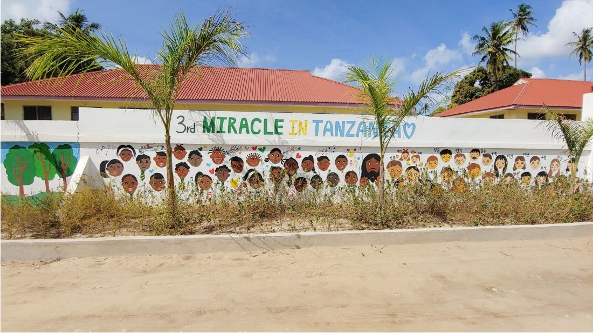

해외 협력 사업

탄자니아 어학교육 사업 소개
어학교육 서비스 지원을 위한 센터를 구축하고, 단계적으로 K12(초, 중, 고)에 확대 적용하고자 하는 사업으로 교육 서비스 모델을 통해 로봇 러닝의 서비스를 완성하고자 한다. 클라이언트 영역에서는 초등학교 교실 환경에 최적화된 어학교육 자율학습 서비스모델을 제시하여, 학습자의 몰입도 향상 등 실질적인 교육 효과를 극대화하고자 한다. 또한 사물인터넷(IoT)기술을 접목하여 다양한 인터페이스가 지원되어 인터넷 환경이 열악한 환경에의 모니터링 지원을 통한 쾌적한 교실 환경을 지원하는 서비스를 연구하고자 한다.
- 탄자니아 어학교육 서비스 환경 분석
- 교사 도우미로봇 케이스 설계
- 인터넷 서비스 환경 구현
- 워크북 및 어학교육 콘텐츠 개발
- 제어 기능 적용 연구
- 학습관리 및 콘텐츠 관리 기능 개발